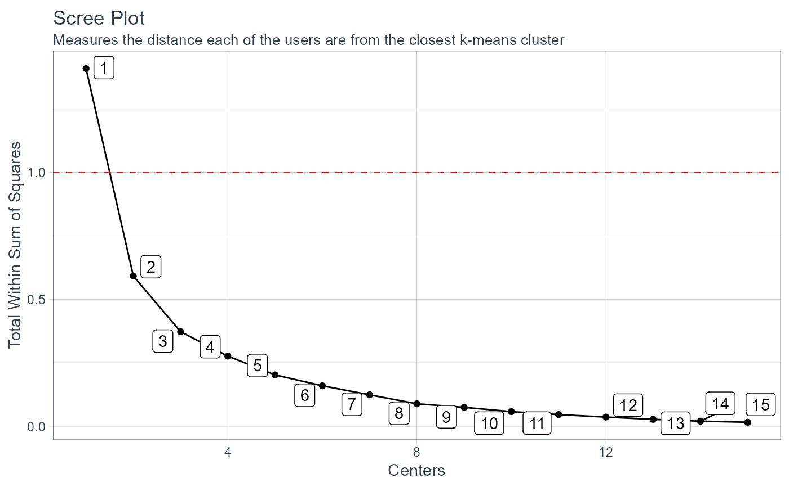

Create a scree-plot from the kmeans_mapped_tbl() function.
kmeans_scree_plt(.data)
| .data | The data from the |
|---|
A ggplot2 plot
Outputs a scree-plot
Steven P. Sanderson II, MPH
#> Warning: package 'tidyquant' was built under R version 4.0.4#>#> Warning: package 'lubridate' was built under R version 4.0.4#> #>#> #> #>#>#>#> Warning: package 'xts' was built under R version 4.0.3#>#> #>#> #> #>#> #>#> #> #>#> #>#> #> #>#>#> Warning: package 'quantmod' was built under R version 4.0.3#>#> Warning: package 'TTR' was built under R version 4.0.3#> #> #>#>data_tbl <- healthyR_data%>% filter(ip_op_flag == "I") %>% filter(payer_grouping != "Medicare B") %>% filter(payer_grouping != "?") %>% select(service_line, payer_grouping) %>% mutate(record = 1) %>% as_tibble() ui_tbl <- kmeans_user_item_tbl( .data = data_tbl , .row_input = service_line , .col_input = payer_grouping , .record_input = record ) kmm_tbl <- kmeans_mapped_tbl(ui_tbl) kmeans_scree_plt(.data = kmm_tbl)